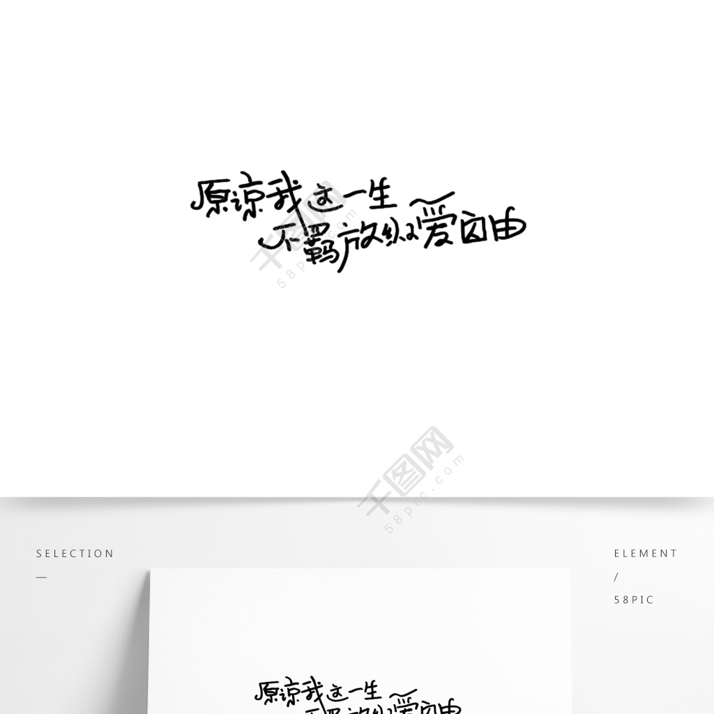

我这一生
2018-10-10/by kala
到底要经历怎样的生活才能回头对自己说我这一生没白来过。

你有没有曾问过自己，想要什么样的人生？我曾经很多次的问自己，想要的是什么，是寻找存在的意义还是寻找生活的乐趣，后来我发现，我想要的不过是活着，简单的活着。没有那么多烦恼，没有那么多的忧虑的活着。有的人除了活着还有梦想，还有向往，而有的人好像什么也没有。
无知而无畏，无欲则无求，而我想说的是无求则无欲，没有追求，没有向往，便没有了动力。一定要找到自己喜欢并想去做的东西，努力的做好它。这也许就是意义吧，时隔多年终于可以对自己说我做成过一件事。
最近有看过《一千零一夜》这个纪录片的一部分，里面有一节讲的是《生命不能承受之轻》里面有这样一段话深深的触动了我「他吻她动人的唇，那时她患了感冒，却使得她的生意更沙哑，比平常更迷人，而盖茨无比抗拒的意识到『财富能囚住并保存青春和奥秘，还有只要拥有许多华服便能永葆清新亮丽』，他也深深意识到黛西的存在『她像银子般闪耀高居在无虞而得意的生活中与底下艰难搏斗的贫寒人家处于两个世界』」。从农村到城镇，从城镇到城市，从城市到一线城市，看过的经历过的深深让我意识到差距真的存在，不仅仅是地位与金钱，更多的是眼界与格局。
从大学到程序员，开发到算法，接触AI，是对我人生一次很大的冲击，我切身感受到了长江后浪推前浪，永远有比你努力的人，永远有比你年轻比你强的人。